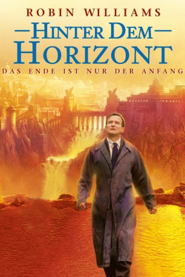
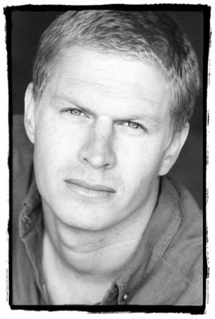
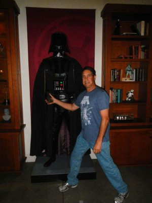

#6111 Hinter dem Horizont
Alternativ: What Dreams May Come
Auszeichnungen: 1 Oscars gewonnen für 1 Oscars nominiert
 
 IMDB-Wertung: 7.0 / 10
IMDB-Wertung: 7.0 / 10  Metascore: 0
Metascore: 0 
Nach einem tödlichen Autounfall erwacht der Kinderarzt Chris Nielsen in einer wundersamen Welt jenseits des Horizonts. Während der verstorbene Mediziner in malerischen, von eigenen Gedanken kreierten Traumwelten Trost findet, vegetiert seine Frau, die Malerin Annie, in der Hölle. Sie hat ihren Verlustschmerz nicht überwinden können und ihr Leben durch Selbstmord beendet. Begleitet von seinem neuen Weggefährten Albert und einem mysteriösen Spurenleser begibt sich Chris auf eine Reise ins Reich der Toten, um Annie wiederzufinden...
Jahr: 1998
Dauer: 113 Minuten
FSK: 12
Land: USA Studio: Polygram Filmed EntertainmentTonspuren: DTS - ,
Untertitel: Deutsch,
Auflösung: 1080p (1920x816) Größe: 7966 MB
Genre: Drama, Fantasy, Liebe
Regisseur: Vincent Ward
Drehbuch: Maiko Nishioka
Soundtrack:
Darsteller:
 Robin Williams als Chris Nielsen
Robin Williams als Chris Nielsen Cuba Gooding Jr. als Albert Lewis
Cuba Gooding Jr. als Albert Lewis Annabella Sciorra als Annie Collins-Nielsen
Annabella Sciorra als Annie Collins-Nielsen Max von Sydow als The Tracker
Max von Sydow als The Tracker Rosalind Chao als Leona
Rosalind Chao als Leona Lucinda Jenney als Mrs. Jacobs
Lucinda Jenney als Mrs. Jacobs- Carin Sprague als Best Friend Cindy
- June Carryl als Woman in Car Accident
 Werner Herzog als Face
Werner Herzog als Face-  James Cotner als Weary Warrior , uncredited
- Jared Dorrance als Little Boy on Dock , uncredited
- London Freeman als Kid by the Dock , uncredited
-  Alexander Kanellakos als Churchgoer , uncredited
- Phaedra Neitzel als Angel , uncredited
 Tom O'Reilly als Devil, Hell Scene , uncredited
Tom O'Reilly als Devil, Hell Scene , uncredited- Nancy Dobbs Owen als Wedding Guest , uncredited
- Kellan Patrick als Wedding Guest , uncredited
- Paradox Pollack als Hellion in the Sea of Faces , uncredited
 Vanessa Ross als Angel Child , uncredited
Vanessa Ross als Angel Child , uncredited- Jessica Brooks Grant als Marie Nielsen
- Josh Paddock als Ian Nielsen
- Maggie McCarthy als Stacey Jacobs
- Wilma Bonet als Angie
- Matt Salinger als Reverend Hanley
- Paul P. Card IV als Paramedic
- Clara Thomas als Little Girl at Lake
- Benjamin Brock als Little Boy at Lake
- Joe Bartnick als Warehouse worker , uncredited
 Cabran E. Chamberlain als Funeral Guest , uncredited
Cabran E. Chamberlain als Funeral Guest , uncredited
Datei: X:\1998\Hinter dem Horizont (1998, FSK12, 1920x816).mkv seit 02.05.2017
Festplatte: HD 1996-2002
 Es gibt insgesamt 86 Filme in der Gruppe '1998'
Es gibt insgesamt 86 Filme in der Gruppe '1998'